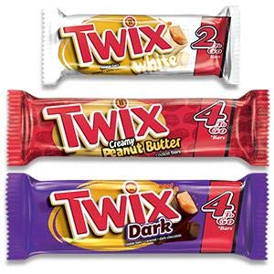

Nazwa batona produkowanego przez spółkę Mars wchodzącą w skład koncernu Mars Incorporated
Twix jest produkowany od 1967 roku. Są to dwa cienkie, podłużne, herbatnikowe ciasteczka o długości 110 mm pokryte warstwą karmelu (32%) i oblane mleczną czekoladą (35%). Ponieważ są one znacznie cieńsze niż inne batony, są pakowane po dwie sztuki.

W Austrii, Francji, Niemczech, Włoszech, Szwecji, Portugalii, Finlandii, Holandii i na Węgrzech, a co za tym idzie także w Polsce (gdzie początkowo sprzedawany był tylko importowany w Pewexach i Baltonie oraz na bazarach), baton był przez wiele lat nazywany Raider. W 1991 roku nazwa ta została zmieniona na używanego międzynarodowo Twixa. W Niemczech zmiana ta była przyjęta z żalem. Slogan reklamowy Raider heißt jetzt Twix, ... sonst ändert sich nix (Raider nazywa się teraz Twix... poza tym nie zmieniło się nic) stał się symbolem fałszywie rozumianego ulepszania rzeczy przez nadawanie im nowych, bardziej modnych nazw.
Nawiązanie do batonika Twix odegrało znaczącą rolę w jednym z odcinków amerykańskiego serialu komediowego pt. Kroniki Seinfelda. Natomiast opakowanie po batonie Raider było jednym z pobocznych motywów serialu Dark.
cukier, syrop glukozowy, mąka pszenna, tłuszcz palmowy, tłuszcz kakaowy, odtłuszczone mleko w proszku, miazga kakaowa, tłuszcz mleczny, laktoza, serwatka w proszku (z mleka), emulgatory (lecytyna sojowa, E442), sól, kakao o obniżonej zawartości tłuszczu, substancja spulchniająca (E500), naturalny ekstrakt z wanilii